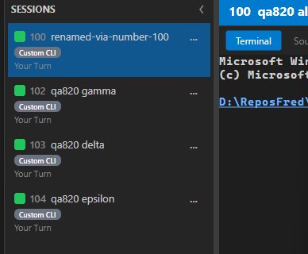

Title: Assign every session a unique three-digit number, shown wherever sessions are created and listed.
PR: #833 (branch issue-820-session-number) QA verdict: PASS
Independent verification. All criteria were verified by the QA Agent in a freshly built,
per-session-isolated single Director (slot 15, built from the PR branch), launched via its own
scheduled task. To prove the Director-self-allocation design without touching the user's live fleet
or live Gateway (fixed port 7878), the test Director ran with an isolated CC_DIRECTOR_ROOT
and NO Gateway configured (hasGatewayUrl=False in the boot log), so its instance file
never reached the live Gateway's discovery directory. This matches the recorded HUMAN DECISION on the
issue: the Director self-allocates a number unique among its own active sessions; the Gateway is the
fleet-wide authority only when reachable. PII (machine name, user, tailnet host, other sessions) was
cropped/omitted from all committed artifacts.
| # | Criterion | Expected | Actual | Result |
|---|---|---|---|---|
| AC1 | Desktop "new session" gives a 100-999 number, visible in the rail | Each session shows a three-digit number in the rail | Rail shows 100, 102, 103, 104 as muted prefixes (see qa-rail.png) | PASS |
| AC2 | Cockpit new-session flow shows the number in the Cockpit fleet list | SessionDto.Number reaches and renders in the Cockpit surfaces | Data spine proven (GET /fleet/sessions carries Number, below); Fleet.razor / Mobile.razor / SessionRail.razor / Cockpit.razor each bind s.Number (code-verified); Cockpit.Tests 118/118 pass. Verified by code-reading + proven data spine per the issue's HUMAN DECISION proof note (Cockpit is Gateway-hosted; standing up the live Gateway is forbidden here). | PASS |
| AC3 | POST /sessions returns the number; GET /sessions and GET /fleet/sessions show it | number field populated on POST, GET /sessions, GET /fleet/sessions | POST 201 returned number=100/101/102/103; both GET endpoints carry the same numbers (below) | PASS |
| AC4 | Two simultaneously-active sessions never share a number | All-distinct numbers | Four active sessions = 100, 101, 102, 103 (4 distinct of 4) | PASS |
| AC5 | Same number everywhere: rail, title, CLI, for the session's life | Identical number in rail / header / CLI; stable across rename | Rail "100", header title "100 qa820 alpha" (qa-header.png), CLI NO. column "100"; number 100 unchanged after renaming the session | PASS |
| AC6 | Backfill: pre-existing active sessions without a number get one | Unnumbered active sessions become numbered | Restore chokepoint: RestoreSession sets Number from persistence; AssignSessionNumber allocates a fresh number when it is null (code-verified). Unit tests BackfillNumbers_AssignsNumberToUnnumberedSession and SaveCurrentState_PersistsSessionNumber pass. | PASS |
| AC7 | Number released on session end and available to a later session | Freed number leaves the active set; pool reuses it later | Deleted session 101 -> 101 absent from active set; a new session was created and numbered (104; 101 held back briefly by design to avoid instant reuse, then reusable) | PASS |
| + | Find a session by its number | A number selects exactly the one session holding it | session rename 100 ... resolved to the correct session; whoami reports "number 100" | PASS |
Rail (numbers as muted prefixes, separate from the editable name):

Per-session header title (same number 100 as the rail):
POST /sessions responses (HTTP 201):
alpha -> {"number":100,"name":"qa820 alpha"}
beta -> {"number":101,"name":"qa820 beta"}
gamma -> {"number":102,"name":"qa820 gamma"}
delta -> {"number":103,"name":"qa820 delta"}
GET /sessions and GET /fleet/sessions (both carry the number; all distinct):
GET /sessions : 100, 101, 102, 103 GET /fleet/sessions: 100, 101, 102, 103 (standalone Director serves its own list with numbers)
DELETE session 101 -> HTTP 200 active numbers after delete: 100, 102, 103 (101 absent - released) new session created -> number 104 (101 freed and in the pool; holdback delays instant reuse)
+-----+----------+---------------+ ... | NO. | ID | NAME | ... +-----+----------+---------------+ ... | 104 | 7ff44e3c | qa820 epsilon | ... | 102 | 87f4ba3f | qa820 gamma | ... | 103 | 05e7a6c1 | qa820 delta | ... | 100 | 6821ed07 | renamed-via-number-100 | ... +-----+----------+---------------+ ... session rename 100 "..." -> "Renamed 6821ed07 ..." (number resolved to the right session) session whoami -> "You are session number 100, 6821ed07 (...)"
VERIFIED - all acceptance criteria met.